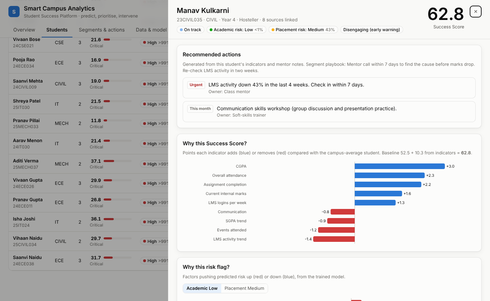
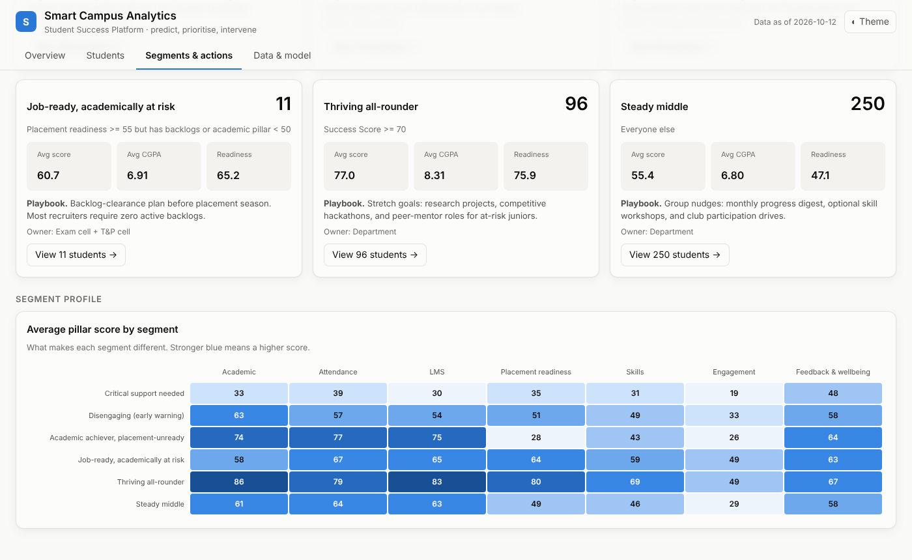
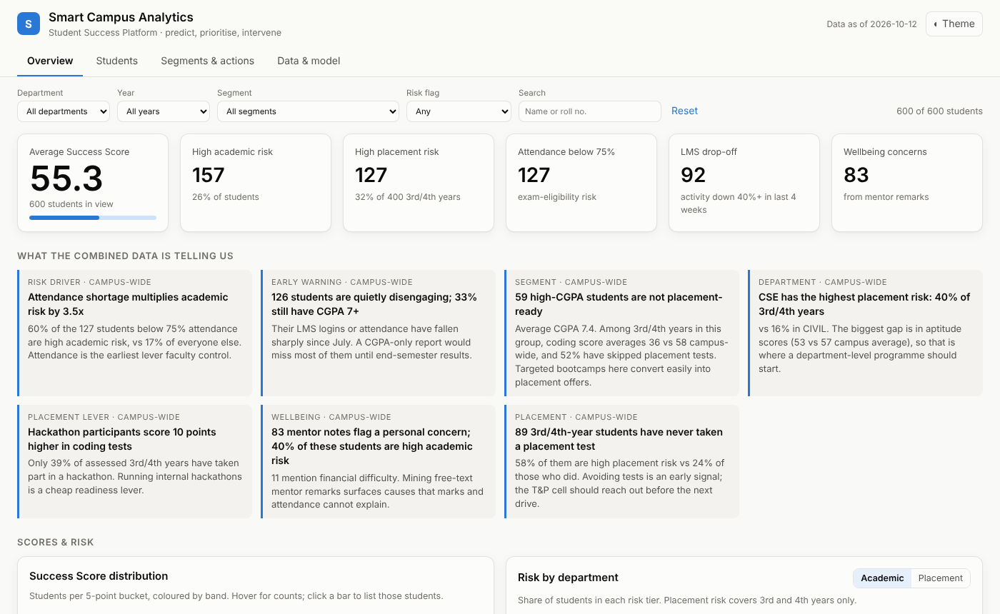

Seven disconnected campus systems joined into one student view. A transparent Success Score, two risk models trained on last year's real outcomes, and a next action for every student flagged.
26,694 raw rows → 600 student records. 15 kinds of data-quality fix, each logged with its row count:
24-cse-007, email, un-padded)Derived signals the raw systems don't have:
| Pillar | Weight | |
|---|---|---|
| Academic | 30% | |
| Attendance | 15% | |
| LMS | 15% | |
| Placement readiness | 15% | |
| Skills | 10% | |
| Engagement | 10% | |
| Feedback & wellbeing | 5% |
Fixed anchors (attendance 60% → 0, 95% → 100) keep scores comparable across semesters. Every score breaks down exactly as baseline + Σ indicator contributions.
Validated on last year's batch (900 students):
| Band | Poor academic outcome | Placed |
|---|---|---|
| Thriving ≥ 70 | 1% | 86% |
| On track 55-70 | 6% | 67% |
| Needs attention 40-55 | 43% | 44% |
| Critical < 40 | 96% | 16% |

| Segment | Students | Owner |
|---|---|---|
| Critical support needed | 108 | Mentor + HoD |
| Disengaging (early warning) | 76 | Class mentor |
| Academic achiever, placement-unready | 59 | T&P cell |
| Job-ready, academically at risk | 11 | Exam + T&P cell |
| Thriving all-rounder | 96 | Department |
| Steady middle | 250 | Department |

Overview: KPIs, then the insights. Click "LMS drop-off" to filter.
Trends: the disengaging cohort fades from week 6 while others stay flat.
Scatter: click a dot in the "achiever, placement-unready" quadrant.
Profile: why the score, why the flag, 360° view, actions with owners.
Students: filter by department, then export the intervention list as CSV.
Data & model: lineage, quality log, weights, validation.

All data in this prototype is synthetic and generated to mimic real campus systems, including their quality problems. No real student information is used.